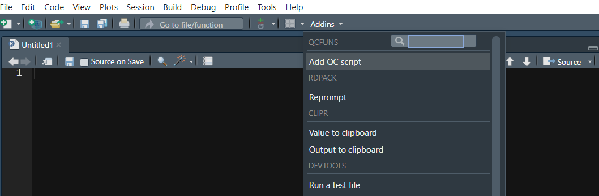

Add QC script template to code snippet
You can add QC script template to your code snippet by running the following code. Then follow the prompt in console to proceed
Or you can do the same by clicking the Add QC script in
Addins. 
The QC script template looks like this:
### Header ###################################################################
# Original Reporting Effort: ${1:Reporting effort}
# Program Name : ${2:Program name}
# R Version : `r R.Version()$version.string`
# Short Description : ${3:Description}
# Author : ${4:Author}
# Date : `r Sys.Date()`
# input :
# Output :
# Remarks :
### Modification History #####################################################
#Rev Modified By Reporting Effort Date Description
### Prepping environment #####################################################
library(haven)
library(dplyr)
library(tidyr)
library(stringr)
library(QCfuns)
files.sources <- list.files(path = read_path(rptdrv, "qc"),
pattern = "^qcf.*\\\.r", full.names = T)
sapply(files.sources, source)
### Derive QC dataset ########################################################
adsl <- read_sas(read_path(a_in, "adsl.sas7bdat")) %>%
mutate(across(where(is.character), zap_empty))
### Generate QC table ########################################################
first_row <- qc_cntrow1(adsl, "TRT01P", row_text = "Analysis set: Safety")
tab1 <- qc_cat_row(adsl, "TRT01P", rowvar = "SEX")
tab_qc <- bind_rows(first_row\$row1, tab1) %>%
mutate(across(everything(), ~replace(., is.na(.), "")))
### Read in RTF ##############################################################
tableid <- "${5:tableid}"
tab_rtf <- qc_rtf2df(tableid, path = opath[["PREPROD"]])
### Compare two datasets #####################################################
qc_comparedf(qc = tab_qc, rtf = tab_rtf, path = qc[["PDEV"]],
filename = tableid)Construct data frame using data to table functions
All data to table functions are listed below. For detailed description and example, please go to each function’s help page.
| Function Name | Description |
|---|---|
qc_cntrow1 |
Create Analysis Set Row |
qc_cntrow1_chg |
Create Analysis Set Row for Change From Baseline Table |
qc_cntrow1_shift |
Create Analysis Set Row for Shift Table |
qc_cat_row |
Create Rows for Categorical Variables |
qc_num_row |
Create Rows for Continuous Variables |
qc_demo |
Create Demographic Rows |
qc_cntpct |
Create Count and Percentage Row |
qc_cntpct_byrowvar |
Create Count and Percentage Table by Row Variables |
qc_chgfb |
Create Change From Baseline Over Time Table |
qc_shift |
Create Shift Table |
The QCfuns package’s data to table functions distinguishes itself from other table creation packages, such as tidytlg and rtable, by taking a unique approach. Rather than attempting to create highly adaptable functions capable of producing all types of tables, QCfuns employs a single, standardized table output function. For example, the qc_demo function streamlines the creation of a common demographic table by incorporating all necessary steps. By inputting the ADSL dataset and a variable list, a single call to qc_demo generates the desired table output. This approach utilizes wrapper functions to expedite the validation check in the second step of the typical validation workflow. Since each study requires a demographic table or summary of AE tables, a uniform table layout is shared across studies. However, this approach has its limitations, and customized methods are required for study-specific tables. To meet these specific requirements, the QCfuns package also includes more versatile functions like qc_cat_row and qc_num_row.